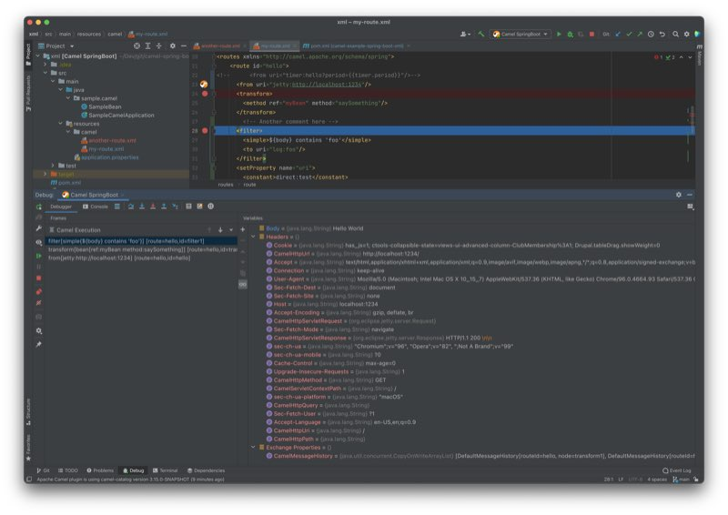
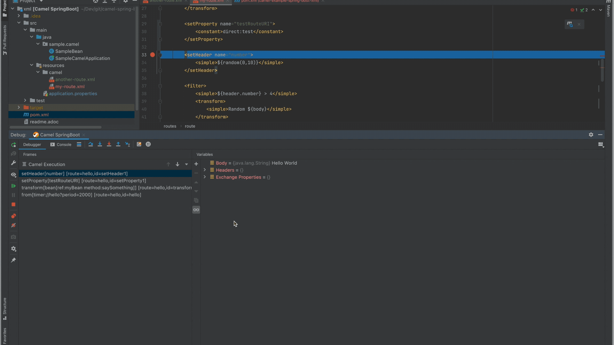
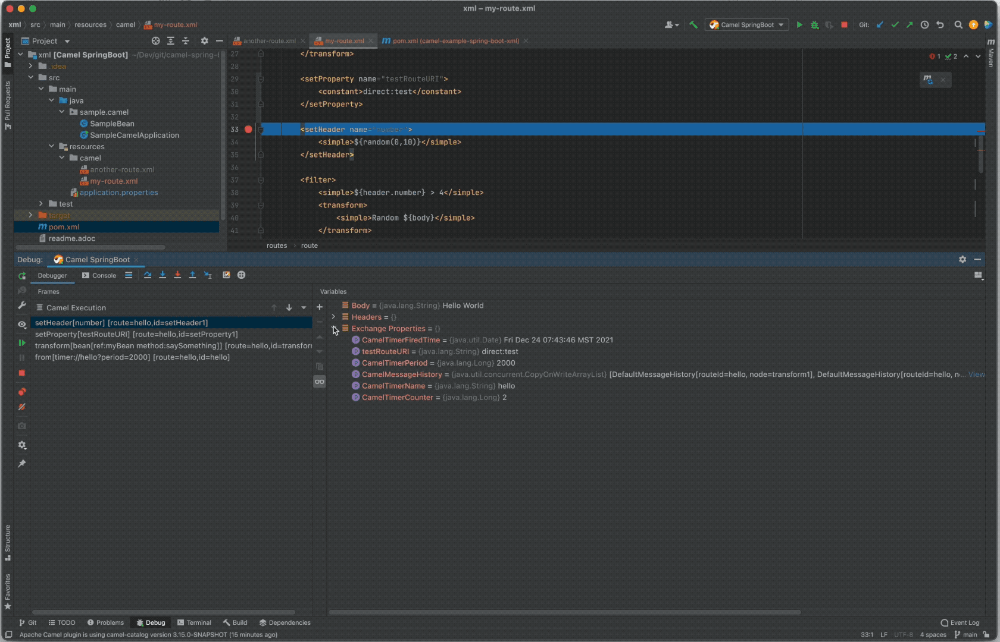
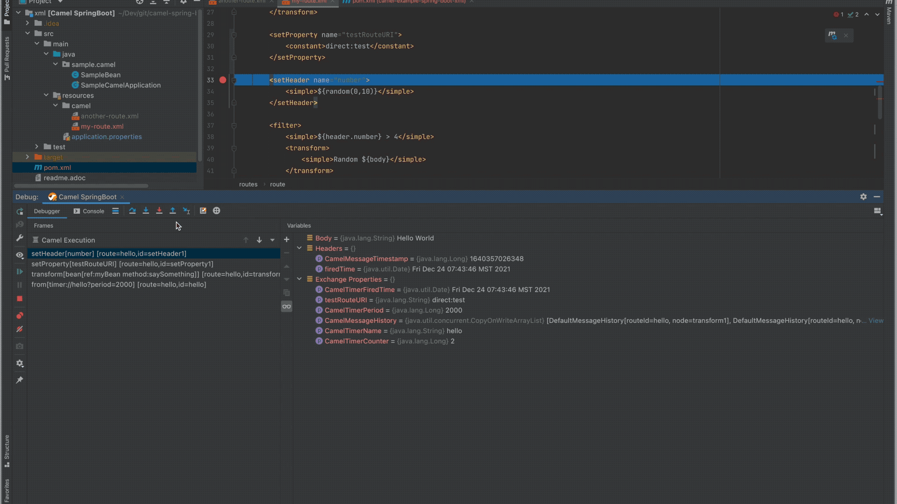
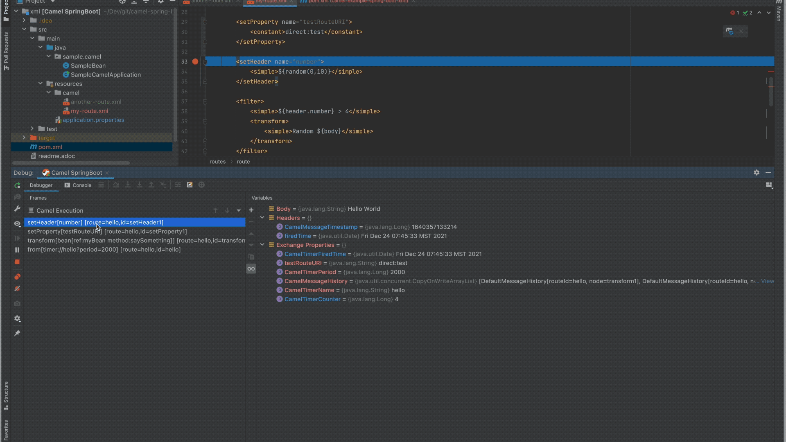

The recent release of the Apache Camel plugin for IntelliJ version v0.8.0 includes the first tech preview of the Camel Route Debugger. The debugger is currently available on Maven-based Camel projects and routes defined in the XML DSL. The minimum recommended Camel version is 3.15.0-SNAPSHOT (older versions also may work, but the functionality is limited).
Features
The first tech preview includes the following features:
-
Breakpoints inside Camel routes in XML DSL;
-
Conditional breakpoints with Simple language predicates;
-
Message body, headers and Exchange properties preview;

-
Camel expressions evaluator;

-
Support for Simple and DataSonnet expression languages;
-
Message History and execution stack;
-
Step Over, Step Into and Step Out functionalities implemented;

-
Run To Position implemented;

-
Camel and Camel SpringBoot run configurations.
To try the debugger:
- Check out a Camel Spring Boot example which uses XML routes;
- Import the project into the IntelliJ as a Maven project;
- Create a new Camel SpringBoot Application run configuration;
- If you want to evaluate expressions in the DataSonnet language, add the following dependencies to your
pom.xml:
<dependency>
<groupId>org.apache.camel.springboot</groupId>
<artifactId>camel-datasonnet-starter</artifactId>
</dependency>
<dependency>
<groupId>org.scala-lang</groupId>
<artifactId>scala-library</artifactId>
<version>2.13.3</version>
</dependency>
What’s next
We’d like to hear from you! Please be sure to submit your bug reports and enhancement requests to the Camel IDEA Plugin issue tracker!
The future enhancements will include support for non-XML DSLs such as Java and YAML, support for other project types (e.g. Gradle) and more!